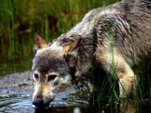

Cuando nos fijamos en el pasado, nos preguntamos cómo los lobos han podido sobrevivir hasta la actualidad. Estos animales fueron cazados en gran escala desde principios del año 1500. Y que ahora se tengan armas más avanzadas sólo ha hecho empeorar la situación. Algunos de estos animales fueron cazados y eliminados de ciertos lugares como alimentos para las personas, la mayoría fueron cazados por sus pieles.
Se estima que en el siglo XIX, más de un millón de lobos de todo el mundo murieron innecesariamente. Tal vez le sorprenda saber que en los Estados Unidos las cosas no estaban del lado de los lobos. En 1919 se inició una campaña en contra del lobo, y se asesinaron legalmente miles de ellos. Esto siguió hasta que en 1942 se decidió que era necesario parar con estas matanzas.
Aun así, los daños ya se habían hecho y se habían reducido drásticamente un gran número de lobos, así como su hábitat natural, en EE.UU. los lobos todavía no han sido capaces recuperarse a pesar de que lo estén haciendo bastante bien algunos lugares, gracias a los programas de protección y los esfuerzos por la conservación de estos animales.
Actualmente muchas especies de lobos siguen en peligro de extinción. Para muchas personas, los lobos no son tan importantes como algunos otros animales en la misma lista. Esto hace que sea aún más difícil conseguir la financiación adecuada para cubrir los costos de los esfuerzos por conservar y proteger a los lobos.
En el año 2009 tanto en Montana como en Idaho se retiró la protección de los lobos que residen en estos lugares. Ahora es legal hacer matanzas en determinados períodos del año, pero en la mayoría de los lugares sigue siendo ilegal matarlos. Las personas lo hacen de todos modos, y los siguen matando de manera ilegal, los envenenan, les ponen trampas, o les disparan para cazarlos.
Puede ser muy difícil determinar la causa de muerte de un lobo en el momento en que lo encuentran muerto. No existen restos de veneno en el cuerpo la mayoría de las veces, pero en caso de que lo haya, es muy difícil probar de dónde vino. Lo que suele ocurrir es que los seres humanos envenenan otro animal, luego lo colocan en un lugar donde los lobos lo puedan consumir para que se envenenen. Esta técnica puede matar a una manada completa en muy poco tiempo, y también es una forma dolorosa de morir. Además, no siempre los lobos encuentran estos animales, por lo que otros animales también pueden ser sacrificados cuando se usan estas técnicas.
Hacer que las personas entiendan que los lobos son parte importante de la naturaleza es parte de los esfuerzos que existen para protegerlos en los diferentes lugares. Cambiar la mentalidad que las personas tienen sobre estos animales es importante. El sacrificio de estos animales da paso hacia la extinción. La protección de su medio natural es importante. Estos animales tienen que tener suficiente comida y suficientes terrenos para que sean capaces de sobrevivir sanos y salvos.
Existen muchas organizaciones que se dedican a ayudar a las poblaciones de los lobos. También existen programas que ayudan a reintroducir a los lobos en los lugares en los que vivieron alguna vez, pero luego se extinguieron. Estos programas han tenido éxito en muchas áreas, incluyendo Parques Nacionales como Yellowstone. A pesar de esto, en la actualidad, muchas especies de lobos siguen estando en graves peligros.